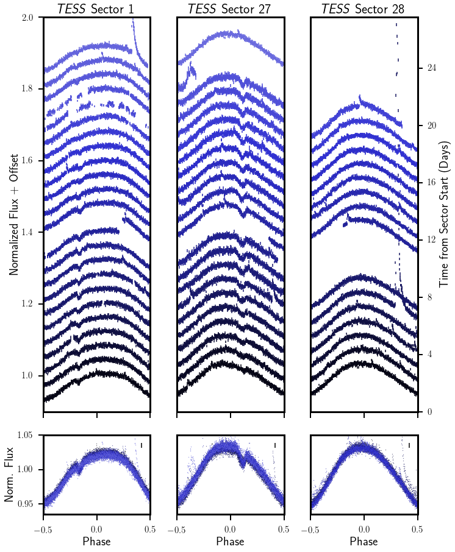
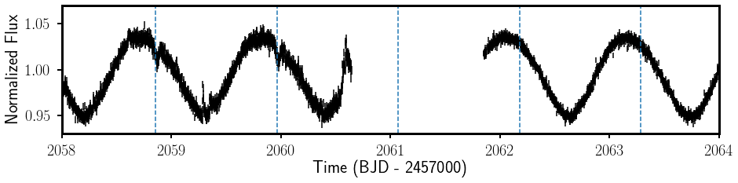
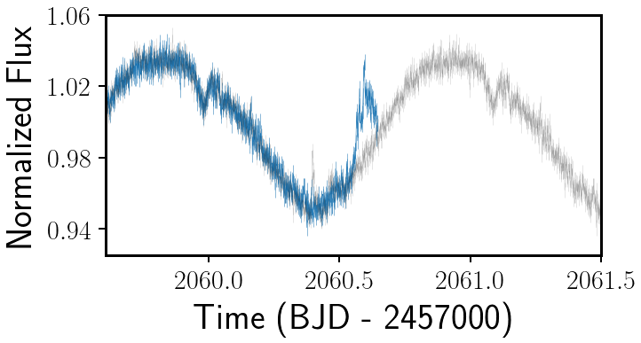

Evidence for Centrifugal Breakout around the Young Star TIC 234284556
Elsa Palumbo, Caltech 2023
15 July 2021

Figure 1: TESS light curve folded on the stellar rotation period.
TIC 234284556's dip evolves throughout Sectors 1 and 27, quickly disappearing
between Sectors 27 and 28. A +.04 vertical offset is added for each new rotational
period, so that time progresses upwards on the plot.
Young stars, those under ~100 million years old, tend to have very strong
magnetic fields. As such, they have frequent stellar flares (sudden flashes of
starlight),
coronal mass ejections
(CMEs; eruptions of plasma which escape from the star), and prominent starspots
(dark magnetic spots like sunspots on our own Sun). Perhaps more surprisingly, the
high magnetic activity of young stars can also show up in the destination of material
from their stellar wind.
In our own Solar System, ionized dust and/or gas from the stellar wind escapes the
Sun's gravitational field, ending up
in the interstellar medium.
Around young stars with especially strong and stable magnetic fields, however, material
from the stellar wind can be trapped by the star's magnetic field, accumulating in
dense clumps of material called magnetospheric clouds. These clouds are
co-rotating, meaning that the cloud's orbital period matches the star's rotational
period. Since part of the star will be in the cloud's shadow when it eclipses
the star, or moves in front of the star from our perspective, these magnetospheric
clouds may show up as dips in a plot of how the light we receive from a star
(its flux) varies over time.
Stellar winds continually stream out from a star, so material from it will continue
to accumulate over time and, eventually, as the magnetic field drags this material
along, the centrifugal force on the magnetic field will overwhelm the restoring
force. So, in the end, the material must somehow escape from the centrifugal
magnetosphere. How this escape occurs has been a subject of debate among
astronomers. Stellar theorists, notably
Townsend et al. (2005), have predicted a
mass-loss mechanism known as centrifugal breakout, in which the ionized
cloud becomes so massive that the magnetic loops constraining the material quickly
snap. At this point, the previously trapped material would suddenly get expelled,
with the magnetic field lines reconnecting immediately afterwards.
However, there's a catch. Because of limited empirical evidence for centrifugal
breakout, including a non-detection in the
candidate system σ Ori E, some alternative
theories have been proposed. Using data from the NASA TESS mission, we
have discovered variability in the observed brightness of a young
(45-million-year-old) low-mass star, TIC 234284556, which offers strong
supporting evidence to the centrifugal breakout narrative. TIC 234284556, which we
present in a paper submitted to the AAS
Journals, features a dip of variable depth
(See Figure 1), indicating that the amount of material that
is eclipsing the star changes over time.
Data from TESS shows a dip that is present over a 1 month timescale that then disappears
over ~1 day, as shown in Figure 2 below. The dips themselves have nearly the same period
as the star's rotation, as seen through starspot variability in the light curve
(the big, nearly sinusoidal variability), suggesting that whatever is transiting
the star is co-rotating.

Figure 2: A dip disappears in a potential centrifugal breakout event.
Note the short timescales involved in the disappearance of the dip, whose
location or projected location is identified by the dashed
blue lines.
Spectra of the star obtained with the Veloce spectrograph at Siding Spring Observatory
in Australia don't show significant variability in the star's hydrogen emission over
a rotational period, which suggests the transiting material is opaque and dusty, like
would be expected from a magnetospheric cloud, rather than a band of hydrogen plasma.
Moreover, TIC 234284556's spectral energy distribution does not show excess emission at
infrared wavelengths when compared to a model of a blackbody with a stellar atmosphere,
suggesting the dips are unlikely to be caused by a partially dissipated protoplanetary
disk, as in the so-called "dipper" stars.
When the dips disappear, we also see a sudden brightening event during the same
~1 day interval (Figure 3) and, based on the timing and
the fact that its morphology is much more symmetric than the steep rise and exponential
decay of a typical flare, we interpret this as evidence for the magnetic re-connection
event that we'd expect to see accompanying breakout as a magnetospheric cloud dissipates.

Figure 3: TESS light curve at the end of Sector 27 (blue),
with an observed brightening at the end of the sector.
For comparison, the light curve one rotational period earlier is underlaid (gray).
Note that this brightening event has a symmetric morphology unlike the steep
rise and exponential decline typical of stellar flares. We consider this feature
a potential post-breakout magnetic reconnection event.
Additional breakout events can explain two
other features of our data: a change in the dip's position relative to the star's
rotational signal between data taken ~2 years apart, as shown in the panels labeled
"Sector 1" and "Sector 27" in Figure 1 and a reappearance
of the dip ~100 days after it first disappeared, observed with ground-based photometry
from the LCO global telescope network.
Besides offering support support for the centrifugal breakout narrative, this star
makes some other interesting contributions. First, since the standard description of
centrifugal breakout was created with more massive stars and more powerful stellar winds
in mind, TIC 234284556's low-mass makes us wonder whether CMEs, not stellar winds, might be the source of the material
producing the dips. We also propose an explanation for the more gradual
variations in the dip depth, duration, and shape that we can see in Figure 1. Since magnetic fields
only interact with ionized particles,
the dip size—a proxy for the amount of trapped material—depends on whether the
material can stay ionized after leaving the star's high-temperature surface. We propose
that, if the material continues to be heated by stellar flares, which are seen on
TIC 234284556 in abundance, the material will continue to stay ionized, and therefore
accumulate. In the absence of flares, however, the electrons and positively charged ions
trapped by the star's magnetic field will start to recombine. As their presence will
no longer be "felt" by a magnetic field when they are no longer charged, that material
will gradually stop being constrained and the dip will start to decrease in size.
Finally, this star hints at the possibility of uniting a number of systems that have
puzzled astronomers, including PTFO 8-8695, Rik-210, and
other young stars observed by K2.
In part because TIC 234284556 is far brighter than most of these systems, it is an excellent
representative for this class of magnetically active young stars with eclipsing
magnetosopheric clouds. Hopefully, TIC 234284556 will continue to give insights into magnetic
activity around young stars in the years to come.
To read the full story, check out the paper at
https://arxiv.org/abs/2107.05649.